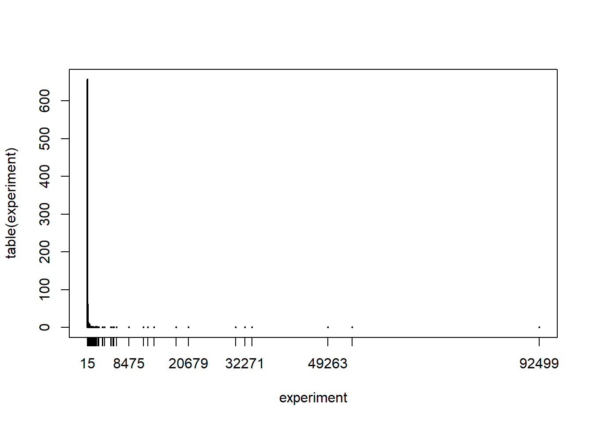
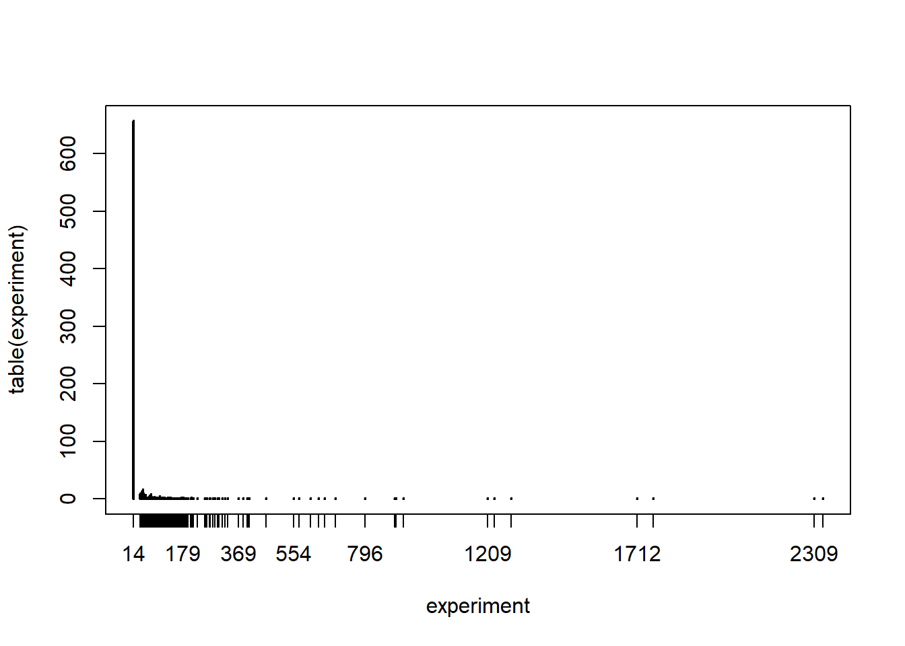

5.6 Playing the roulette
Consider a European-style roulette which includes numbers between 0 and 36. In roulette there are many different betting alternatives but we consider here the simplest case where we bet on a single number. If we pick the right number then we win 35 times what we bet.
Consider the following scenario. We start playing roulette with a fixed budget. Every sping of the roulette costs one unit of budget. We play until we run out of budget and we always bet on the same number. The following function roulette implements this game.
roulette <- function(budget, number){
current <- c()
while(budget > 0){
outcome <- sample(0:36,1)
if(outcome == number) {
budget <- budget + 35
}
else {budget <- budget -1}
current <- c(current,budget)
}
current
}It takes two inputs: the budget and the number we decided to play all the time. It outputs our budget throughout the whole game until it ends.
Let’s play one game with a budget of 15 and betting on the number 8.
set.seed(2021)
roulette(15,8)## [1] 14 13 12 11 10 9 8 7 6 5 4 3 2 1 0In 15 spins the number 8 never comes up and therefore our game ends quite quickly.
We can ask ourselves many questions about such a game. For instance:
What is the probability that the game last exactly 15 spins if I start with a budget of 15 and bet on the number 8?
What is the average length of the game starting with a budget of 15 and betting on the number 8?
What is the average maximum wealth I have during a game started with a budget of 15 and betting on the number 8?
We will develop various Monte Carlo experiments to answer all the above questions. In each case, we simply need to modify the function roulette to output some summary about the game.
5.6.1 Question 1
- What is the probability that the game last exactly 15 spins if I start with a budget of 15 and bet on the number 8?
If a game where I started with a budget of 15 ends after 15 spins, it means that the number 8 never showed up. We can adapt the function roulette to output TRUE if the length of the vector wealth is exactly equal to budget.
roulette1 <- function(budget, number){
wealth <- c()
current <- budget
while(current > 0){
outcome <- sample(0:36,1)
if(outcome == number) {
current <- current + 35
}
else {current <- current -1}
wealth <- c(wealth,current)
}
if(length(wealth) == budget){return(TRUE)} else{return(FALSE)}
}Therefore for the previous example the function should output TRUE.
set.seed(2021)
roulette1(15,8)## [1] TRUELet’s replicate the experiment 1000 times. The proportion of TRUE we observe is our estimate of this probability.
set.seed(2021)
experiment <- replicate(1000,roulette1(15,8))
sum(experiment)/1000## [1] 0.657Notice that actually we could have also computed this probability exactly. This is the probability that a Binomial random variable with parameter \(n=15\) (15 spins of the roulette) and \(\theta = 1/37\) (the number eight has probability 1/37 of appearing in a single spin) is equal to zero (no 8 can happen). This is equal to:
dbinom(0,15,1/37)## [1] 0.6629971Therefore the Monte Carlo experiment approximates well the probability.
5.6.2 Question 2
- What is the average length of the game starting with a budget of 15 and betting on the number 8?
We can answer this question by adapting the roulette function to output the length of the vector wealth.
roulette2 <- function(budget, number){
wealth <- c()
current <- budget
while(current > 0){
outcome <- sample(0:36,1)
if(outcome == number) {
current <- current + 35
}
else {current <- current -1}
wealth <- c(wealth,current)
}
length(wealth)
}In our example, the output should be 15.
set.seed(2021)
roulette2(15,8)## [1] 15Let’s replicate the experiment 1000 times and summarize the results with a plot (it may take some time to run the code!).
set.seed(2021)
experiment <- replicate(1000,roulette2(15,8))
plot(table(experiment))
We can see that the distribution is very skewed, most often the length is 15 spins, but then sometimes the game has a length which is much longer. Therefore, the median of the data is a much better option to summarize the average length of the game. We can compute it, together with a range of plausible values, as
median(experiment)## [1] 15c(sort(experiment)[25],sort(experiment)[975])## [1] 15 1923So we can see that the median is indeed 15: most of the times the number 8 does not appear and therefore the game ends in 15 spins.
5.6.3 Question 3
- What is the average maximum wealth I have during a game started with a budget of 15 and betting on the number 8?
We can answer this question by adapting the roulette function to output the maximum of the vector wealth.
roulette3 <- function(budget, number){
wealth <- c()
current <- budget
while(current > 0){
outcome <- sample(0:36,1)
if(outcome == number) {
current <- current + 35
}
else {current <- current -1}
wealth <- c(wealth,current)
}
max(wealth)
}Let’s again replicate the experiment and plot the result.
set.seed(2021)
experiment <- replicate(1000,roulette3(15,8))
plot(table(experiment))
We can then get an estimate of the maximum wealth as well as a range of plausible values as
median(experiment)## [1] 14c(sort(experiment)[25],sort(experiment)[975])## [1] 14 331Since most often the game ends with no 8 appearing, the maximum wealth is most often 14.